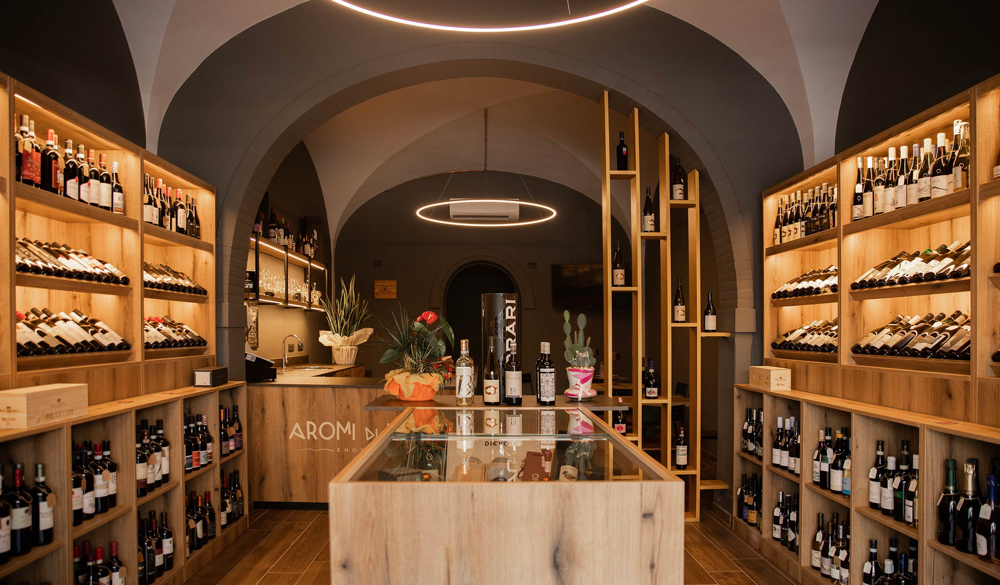
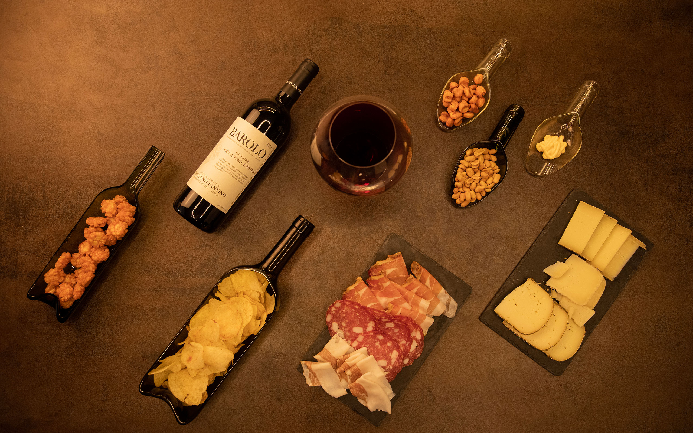
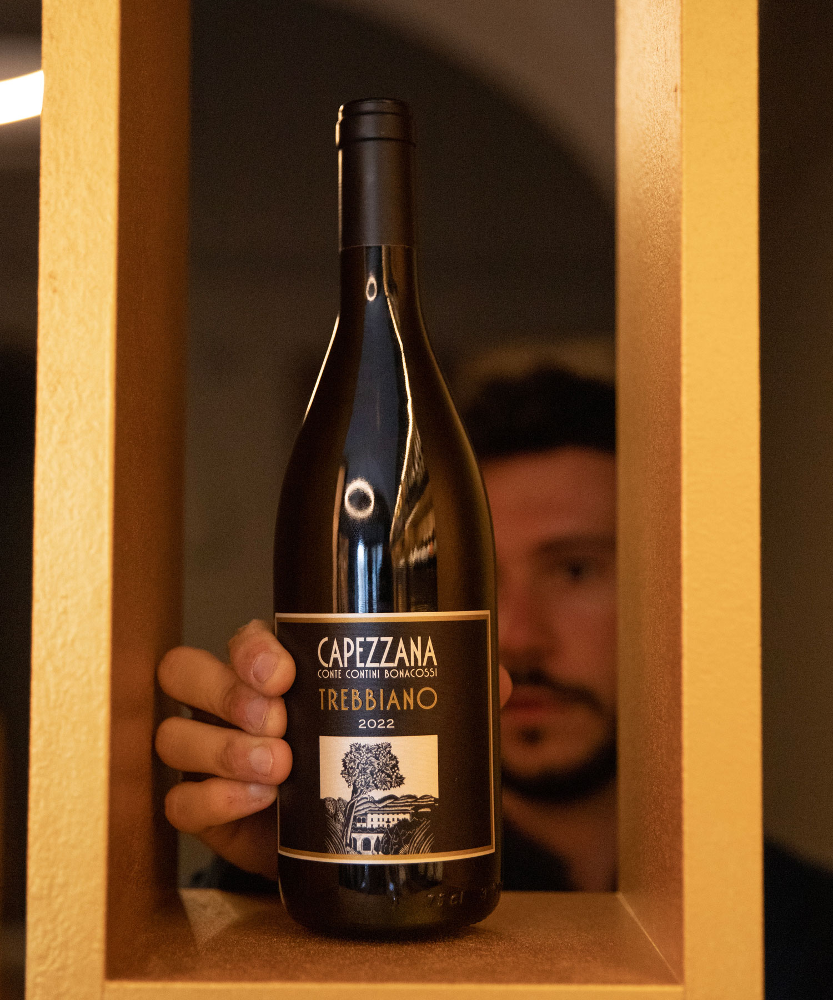

Dalle migliori cantine al tuo calice

Enoteca e degustazioni a Fucecchio
L'enoteca

Aromi di Vino è un'enoteca moderna che vuole farti scoprire il mondo del vino a 360 gradi. Qui è possibile acquistare bottiglie, partecipare a degustazioni mirate e ad incontri con aziende vitivinicole, seguire corsi di avvicinamento al vino e godersi un ottimo aperitivo.
Il mio intento sarà sempre quello di consigliare il giusto vino per la giusta occasione e raccontare la storia e le scelte vitivinicole ed enologiche che stanno dietro alla bottiglia con cui uscirai dalla mia enoteca. Tra le mie selezioni ci sono vini di facile beva, vini quotidiani, vini da invecchiamento e vini d'annata da bere giovani; vini da meditazione e altri da bere senza pensieri dopo una giornata di lavoro – magari abbinati ai salumi e formaggi di qualità che propongo.
In più, se tu fossi interessato a creare una tua cantina a casa, sono pronto a guidarti e a suggerirti le scelte migliori per averla più completa possibile.

L'enologo

Mi chiamo Giacomo Carusi e sono un enologo laureato all'Università di Pisa in viticoltura ed enologia. Dopo anni di lavoro fuori Fucecchio, ho deciso di tornare a casa ed aprire un'enoteca tutta mia. Qui ho modo di raccontare la bottiglia che propongo partendo dalla barbatella piantata in un campo, passando al vino imbottigliato in azienda, per arrivare infine al calice del consumatore, senza fermarmi alla sola e mera degustazione.
Ciascun vino che ho scelto di vendere segue i criteri della correttezza: deve essere pulito e senza difetti. Ripongo grande attenzione nello studio complessivo di un'azienda, mi informo sulle scelte fatte, sulle procedure dovute all'annata, alla posizione geografica, all'esposizione. Approfondisco vitigni, zone enologiche e sistemi di vinificazione particolari, perché ogni vino è un vero viaggio che voglio condividere sia col principiante che con l'esperto di settore.